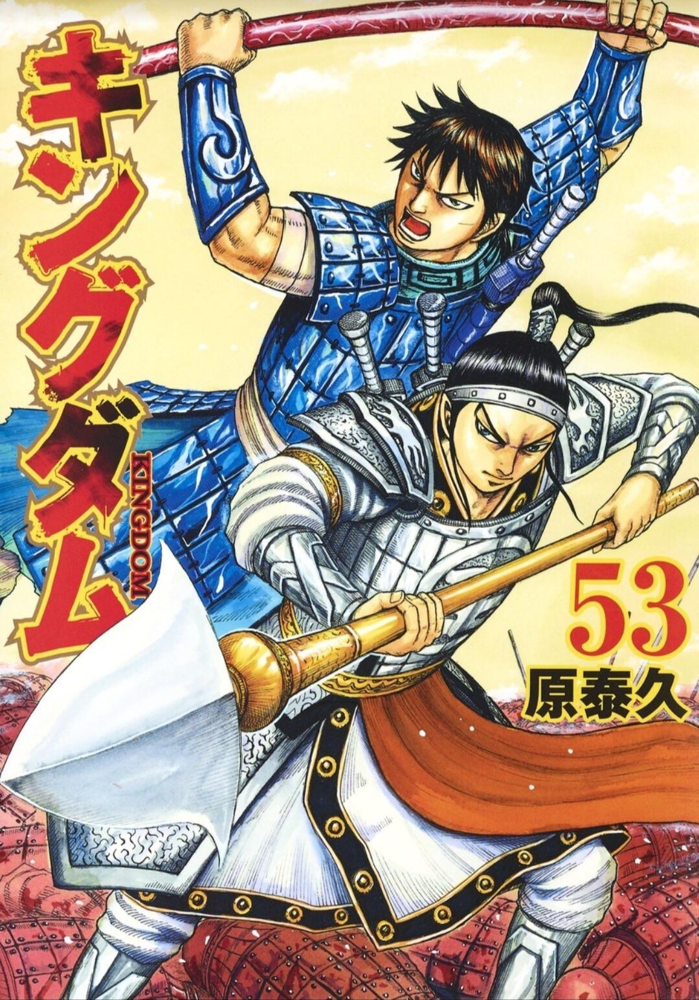
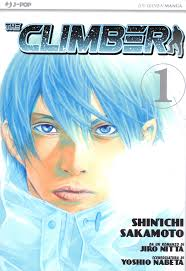
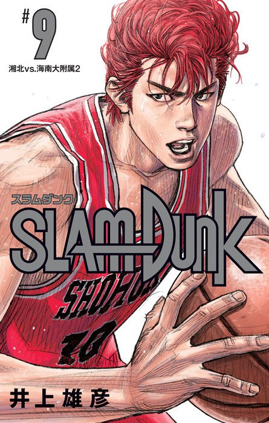

Kingdom

Kingdom provides a fictionalized account of the Warring States period primarily through the experiences of the war orphan Xin and his comrades as he fights to become the greatest general under the heavens, and in doing so, unifying China for the first time in 500 years.
69 volumes as of July 2023.
- Author: Yasuhisa Hara
- Year of Publication: 2006 - present
The Climber

It tells the story of introvert solo mountain climber Mori Buntarō—partially based on real-life mountain climber Buntarō Katō—who is introduced to sport climbing after being transferred to a new high school and later dedicates his entire life to professional mountain climbing.
17 completed volumes
- Author: Shinichi Sakamoto
- Year of Publication: 2007 - 2011
Slam Dunk

The story follows Hanamichi Sakuragi, who becomes a basketball player from the Shohoku High School basketball team in order to make Haruko Akagi, a girl he likes, fall in love with him..
31 completed volumes
- Author: Takehiko Inoue
- Year of Publication: 1990 - 1996